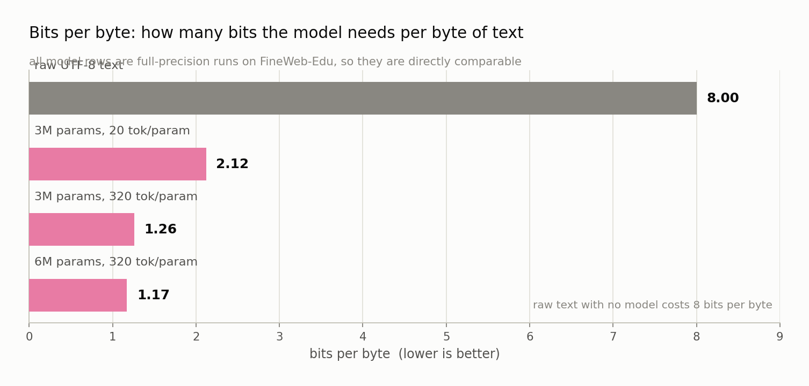
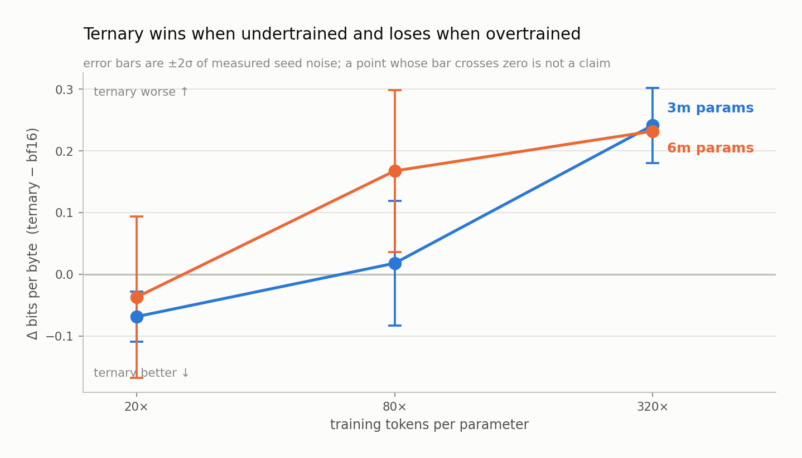

Chapter 3 — Measuring Quality#
This chapter gives you the measuring instrument. You will learn what cross-entropy loss actually measures, how it converts into bits-per-byte (the metric this project lives by), what a bits-per-byte score of 1.18 means in human terms, and why the standard AI benchmarks are useless at this scale. Then comes the most important idea in the book: identical training recipes give different answers, and knowing how different is the difference between a finding and a story.
Cross-entropy: how surprised was the model?#
In Chapter 2 we established that a language model outputs a probability distribution over 32,768 possible next tokens. To score it, we look at what actually came next and ask: how much probability did the model assign to the right answer?
The score is cross-entropy loss, defined as the negative logarithm of the probability the model gave to the true token. If the model was certain and correct, assigning probability 1.0, the loss is -ln(1.0) = 0. If it assigned 0.5, the loss is -ln(0.5) ≈ 0.693. If it assigned 0.01, the loss is -ln(0.01) ≈ 4.6. Confidently wrong answers are punished savagely, because the logarithm heads to infinity as probability approaches zero. The loss reported for a run is this quantity averaged over every position in the evaluation text.
Because we used the natural logarithm, the unit is the nat. Lower is better, always. Two anchors make the scale concrete. A model that has learned nothing and spreads its probability evenly across all 32,768 tokens scores ln(32768) ≈ 10.4 nats on every token, no matter what the text says. A perfect oracle scores 0. Real models live between, and most of the useful signal in this project sits between about 1.1 and 2.8.
From nats to bits, and a word about perplexity#
Nats are awkward to reason about. Divide by ln(2) ≈ 0.693 and you get bits, which have a physical meaning: a bit is one yes-or-no answer, and a loss of b bits per token means an ideal compressor using this model's predictions would need b bits to encode each token. The uniform-guess baseline of 10.4 nats becomes exactly 15 bits, which makes sense because 2^15 = 32,768. Guessing uniformly among 32,768 options costs 15 yes-or-no questions.
You will also meet perplexity, which is just exp(loss): the effective number of equally-likely options the model is choosing among. A loss of 10.4 nats is a perplexity of 32,768; a loss of 2.0 nats is about 7.4, meaning the model is roughly as uncertain as someone picking among 7 or 8 plausible continuations. Perplexity is intuitive, but LOGOS does not use it as the primary metric for one decisive reason: it is computed per token, and tokens are an artifact of the tokenizer. Change the tokenizer and every perplexity number shifts, even though nothing about the model's command of language changed. Perplexity is not comparable across systems, and comparability is the entire job here.
Bits-per-byte: the metric that survives#
The fix is to divide by something that does not depend on the tokenizer. The obvious candidate is the raw text itself.
Bits-per-byte (BPB) is the total cross-entropy over an evaluation set, converted to bits, divided by the number of UTF-8 bytes in the original text. In words: take the model's total surprise across the whole passage, express it in bits, and charge it against how many bytes of actual text it explained. A model that chops text into few large tokens and a model that chops it into many small ones are held to exactly the same standard, because the denominator is the text, not the chopping.
The identity is worth seeing explicitly. If a model averages L nats per token over T tokens covering B bytes of text, then
BPB = (L * T) / (ln(2) * B)
The project's micro-scale replication run makes this exact rather than approximate. That run used byte-level tokens, a vocabulary of 256 where every token is one byte, so T = B and the ratio collapses to BPB = L / ln(2). When that run reports 2.6830 BPB, you can invert it directly: the model's average loss was 2.6830 × 0.693 = 1.860 nats per byte. Having a case where the metric reduces to a closed form is not a coincidence; it is how the evaluator gets checked against something that cannot be argued with.

What the real numbers look like#
Here are actual measured BPB values from the project, which also serve to calibrate your intuition for the scale.
| Run | Setting | Val BPB |
|---|---|---|
| micro-P0, ternary | 4.7M params, byte-level, Frankenstein, D/N ≈ 0.87 | 2.683 |
| micro-P0, bf16 | same | 2.697 |
| 3m, ternary | FineWeb-Edu, 20 tokens/param | 2.053 |
| 3m, ternary | FineWeb-Edu, 320 tokens/param | 1.500 |
| 3m, bf16 | FineWeb-Edu, 320 tokens/param | 1.259 |
| 12m, bf16 | FineWeb-Edu, 80 tokens/param | 1.177 |
Two things to notice. First, training longer buys a great deal: the same 3M ternary model goes from 2.053 to 1.500 BPB purely by seeing 16× more tokens. Second, the numbers have a concrete meaning. Raw text stored as UTF-8 costs 8 bits per byte. A model at 1.18 BPB has learned enough about English to encode that text in about 1.18 bits per byte instead, a compression factor of roughly 6.8×. At 2.05 BPB the factor is about 3.9×. "How well does this model understand text" and "how well can it compress text" are formally the same question, and BPB answers both.
Why not benchmarks#
The public leaderboards use multiple-choice benchmarks: ARC (science questions), HellaSwag (commonsense sentence completion), MMLU (a broad exam). These are the numbers press releases quote. LOGOS does not use them to decide anything, and the reason is unglamorous. Below roughly 60M parameters, models do not score meaningfully above chance on these tests. A four-way multiple-choice benchmark has a 25% floor, and a 12M-parameter model scores near it, with the run-to-run wobble larger than any difference between arms. A metric that cannot distinguish your conditions is not a weak metric, it is no metric at all, and reporting it would invite readers to draw conclusions from noise.
So the division of labor is explicit: loss is the fitting target, benchmarks are the validator. Benchmarks come back at 250M+ parameters, where they carry signal, and their job there is narrow. They gate nothing and enter no fit. They answer one question: does the ordering BPB predicted survive on tasks people actually care about? Two disjoint held-out sets are maintained so the set used for fitting is never the set used for checking.
Noise: the same recipe, twice#
This is the part that separates careful work from the rest, so read it slowly.
Train a model. Now train it again, changing nothing but the random seed that initializes the weights. Same architecture, same data, same data order, same learning rate, same number of steps. You will not get the same answer. Training is a stochastic process wandering through an enormous space, and two wanderers starting from slightly different points end up in different places of slightly different quality.
How different? Measured in this project at 3M and 6M parameters, the seed-to-seed standard deviation ranges from 0.006 to 0.066 BPB depending on the cell. Standard deviation, written σ (sigma), is the typical distance of an individual result from the average of its group: if σ = 0.05, individual runs of the identical recipe routinely land 0.05 BPB above or below the mean, and occasionally further.
Put that beside the effects being measured. The micro-P0 ternary-versus-bf16 gap was 0.014 BPB. The seed noise in that experiment's bf16 arm was 0.139. The "result" was a tenth the size of the wobble, which is precisely why Research Note 0 reports it as within noise and claims nothing from it.
The 2-sigma rule#
LOGOS therefore operates under a rule enforced mechanically by its results store, not left to the author's judgment: no quality gap is claimed unless it exceeds 2σ for its size class. Two sigma is the conventional bar, corresponding roughly to a result you would see by chance about one time in twenty. In this project the bar for a given comparison is twice the larger of the two arms' measured seed standard deviations, so noisier cells face a higher hurdle automatically.
There is a stricter version for comparing two runs that each had only one seed, because then both numbers carry full seed noise instead of being averaged down. The bar becomes 2 · σ · √2. At 6M parameters, where the pooled σ is 0.0519 BPB, that comes to 0.147 BPB. Any two single-seed 6M runs closer together than 0.147 BPB are, as far as this project is concerned, the same number. That bar has real teeth: in the L1 learning-rate probes, it wiped out every difference among the quantized arms and left exactly one significant comparison standing.
The L0 table, read properly#
Now the payoff. Below is the project's first real result: the gap between a ternary model and a 16-bit model, measured across tokens-per-parameter, with each gap set against its own noise bar.

| Cell | Gap (ternary − bf16) | 2σ bar | Verdict |
|---|---|---|---|
| 3m @ 20× | −0.0687 | 0.0409 | ternary better, significant |
| 3m @ 80× | +0.0178 | 0.1008 | within noise, no claim |
| 3m @ 320× | +0.2413 | 0.0611 | bf16 better, significant |
| 6m @ 20× | −0.0372 | 0.1311 | within noise, no claim |
| 6m @ 80× | +0.1675 | 0.1313 | bf16 better, significant |
| 6m @ 320× | +0.2319 | (1 seed; 3m σ implies ~0.06) | bf16 better, beyond borrowed bar |
Negative means ternary won. In the figure, the line crosses zero somewhere between 20× and 80× tokens per parameter: ternary is genuinely better when training is short, and genuinely worse once training runs long, with no sign of the deficit levelling off by 320×.
Now look at what the bars do. At 3m/20×, a gap of −0.0687 clears a bar of 0.0409, so the claim stands. At 3m/320×, +0.2413 against 0.0611 is overwhelming. But at 3m/80× the gap of +0.0178 sits against a bar of 0.1008, nearly six times larger, and at 6m/20× a gap of −0.0372 faces a bar of 0.1311. Those two cells look like results. They have signs and magnitudes, and they would slot neatly into a narrative about where the crossover sits. The project claims nothing from either, because the measurement cannot tell them apart from the recipe being run twice.
Two of six cells are unclaimable: a third of the table thrown away, and throwing it away is the whole point. The alternative, reporting all six with their signs and letting the reader assume they are all findings, is not a rhetorical shortcut; it is how a field fills up with results that do not replicate. The discipline only works because the noise was measured first, by paying for three seeds at 3M and two at 6M before any comparison was made. Noise you have not measured is noise you will mistake for signal.
What to remember#
Cross-entropy loss measures a model's surprise at the token that actually came next, in nats, where uniform guessing over a 32,768-entry vocabulary scores ln(32768) ≈ 10.4 and lower is better. Dividing by ln(2) gives bits, and dividing the total bits by the UTF-8 byte count of the source text gives bits-per-byte, the tokenizer-independent metric this project fits its law to; a score of 1.18 BPB means the model could encode text at about 1.18 bits per byte instead of the raw 8, a compression factor near 6.8×. Multiple-choice benchmarks are excluded below 60M parameters because scores there are indistinguishable from guessing, so loss is the fitting target and benchmarks return only at 250M+ as a check on ordering. The load-bearing discipline is noise: identical recipes with different seeds differ by 0.006 to 0.066 BPB at these sizes, so nothing is claimed below twice the measured seed sigma, and 0.147 BPB is the bar for two single-seed runs at 6M. In the L0 crossover table, two of six cells fall inside their bars and are reported as unclaimable, which is the difference between a measurement and a story.